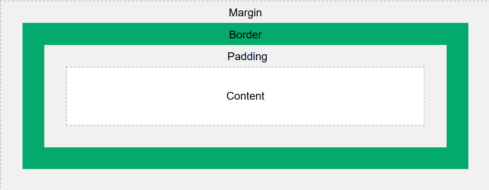

Introduction of CSS
Syntax
By using selectors to specify the elements you want to style, it simplifies the styling of html files.
Selectors can decide which elements to apply to based on type, id, class, etc. Its flexibility
allows more efficient and concise styling.
Details about different kinds of selectors.

Selectors
- Basic Selectors:used to target elements by html element names
- Universal Selector(*): apply to all elements.
- Element Selector: h1, p, etc.
- Class Selector(.): apply to a certain class. Different elements could be assigned with the same class value while a single element could have multiple class values.
- ID selector(#): apply to the speific element with the unique id.
- Combinator Selectors:target elements by the hierarchy or position of differrent elements
- Descendant Selectors( ): target an element inside another.
- Child Selectors(>): target the direct child elements of a parent.
- Adjacent Sibling Selectors(+): target the elements immediately following the other.
- General Sibling Selectors(~): applied to all the elements following a specific element.
- Attribute Selectors:target elements based on the presence or value of certain attributes.
- Presence Selector: select elements with a certain attribute.
- Atrribute Value Selector: target elements with a particular attribute value.
- Substring Matching: matches elements where the attribute contains a specific substring, and there are three forms of substring matching based on the start position of substring: begin with(^=), contain(*=), end with($=).
- Pesudo-Classes: pesudo-classes are the keywords used to define a specific state or condition of an element, such as hoverd, focused, etc. Adding pesudo-class to a selector(selector:pesudo-class) enables to style elements of special state.
- Pesudo-Elements:a pesudo-element is a keyword referring to different parts of an element, such as the first line of a paragraph. Adding pesudo-elements to a selector(selector::pesudo-class) allows to style different parts of an element.
Box Model
To correctly set an element's size and control its position in the webpage, we need to understand how the CSS box model works. Every element in the HTML document is assigned with a virtual box model, which represents the element's dimension and position in the webpage.
A box model consists of four parts: content, padding, boarder and margin.
- Content: the area where the text, image or other content exists.
- Padding: transparent space between the content and the element's boarder.
- Border: a frame that wraps around the elment's content and padding area.
- Margin: the space between an element's border and neighbouring element.
Illustration Diagram of Box Model
{kind=link}

By default, when we set the width and height properties of an element, we are setting the size of its content area, and to obtain the actual size of the element we need to count in the padding and border space too. Here's an example of how to calculte the dimension of an element. We can also set the box-sizing property to directly set the width and height of an element.
Priority
There could be multiple styling rules targeting the same element which may cause potential conflicts,
here explains how to tell the priority of different styling rules.
CSS follows a cascading scheme to decide the priority of styling rules: !important > specificity >
source order. First, rules with the "!important" mark have the highest priority. If !important couldn't
distinguish the priority, then compare the specificity of different styling rules, the rules with higher
specificity win. Finally, if conflicting rules have the same specificity, check the order of rules,
the later rule wins. For the comparison of order between internal and external styling rules, think of the
position of <link rel="stylesheet" href="style.css"> as where the content of external css file is
inserted.
Below is a table demonstrating the specificity hierarchy of different selectors.